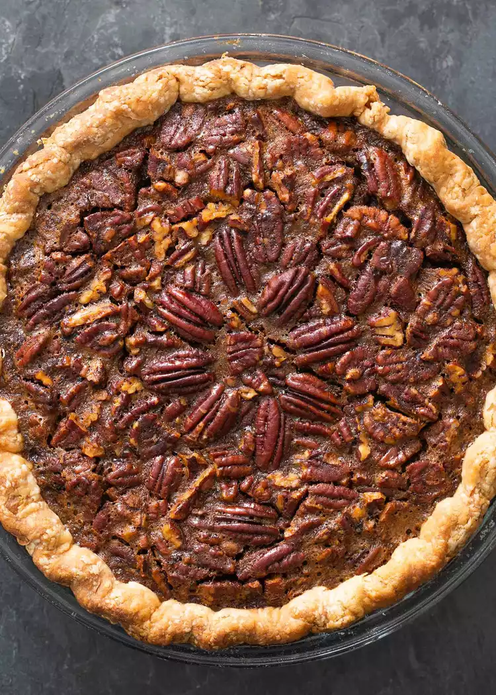

The Best Pecan Pie

Pecans are native to North America. So, it is entirely fitting that a pecan pie would make an annual appearance at Thanksgiving along with our other native foodstuffs like turkey, pumpkin, and cranberries.
Pecan pie itself, though, is a more recent invention. While the first printed recipes for the pie started appearing in the late 1800s, the pecan pie classic as we know it became popular through the marketing efforts of Karo in the 1930s to help sell their corn syrup, a necessary ingredient in the pie.
Most pecan pie recipes I've found call for two cups of sweetener—one cup of corn syrup plus one cup of either granulated or brown sugar. I find that just a bit too sweet for my taste. So, for this pecan pie recipe, I've dropped the sugar down by half a cup. Feel free to reduce further or add more to your taste.
This pie bakes for a little over an hour at 350°F. When done, the crust should be golden brown. The pie should be set around the edges, but still a bit wiggly (like Jell-O) in the middle. It will continue to firm up as it cools.
Ingredients
- 1 unbaked 9-inch pie crust, frozen for at least 30 minutes (see recipe note)
- 2 cups (210g) pecans, coarsely chopped (save a few whole pecan halves to create a decoration on the surface of the pie, if you want)
- 3 large eggs, slightly beaten
- 1/2 cup brown sugar
- 1 tablespoon molasses (unsulphured)
- 4 tablespoons unsalted butter, melted
- 1/2 teaspoon salt
- 2 teaspoons vanilla extract
Steps
- Preheat the oven to 350°F and position a rack in the center.
- In a medium bowl vigorously mix together the eggs, brown sugar, corn syrup, molasses, melted butter, vanilla, and salt, until smooth. (No need for a mixer, you can beat by hand using a wooden spoon.)
- Spread the chopped pecans over the bottom of a frozen pie shell. Pour the filling over the pecans. Don't worry about burying the pecans, they will rise to the surface. (If you have reserved a few whole pecan halves, you can arrange them on the surface in a decorative pattern. Just dip them below the wet filling and let them rise again so they get coated with the filling.)
- Bake at 350°F for 30 minutes. After 30 minutes tent the pie loosely with aluminum foil to prevent the crust and pecans from getting too browned. Bake for another 35 to 45 minutes until the filling has set. The pie should be a bit wiggly in the center.
- Remove from the oven and let cool completely. Note that the pie will be puffed up a bit when you first take it out of the oven. It will settle as it cools.
Here is the original recipe
Home